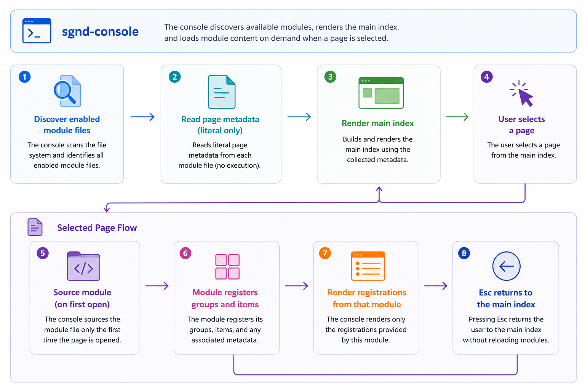

SolidGroundUX Documentation
Console Module Lifecycle

This page-level lazy-loading model keeps initial console startup small while preserving self-contained functional modules. Implementation code is parsed only when the corresponding page is actually used.